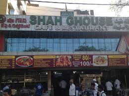

Shah Ghouse
Shah Ghouse is very popular among biryani lovers in Hyderabad. It is known for its rich and spicy flavors, especially its mutton biryani. The restaurant is usually crowded because many people believe it serves one of the best biryanis in the city. The atmosphere is simple, but the taste makes it special.
